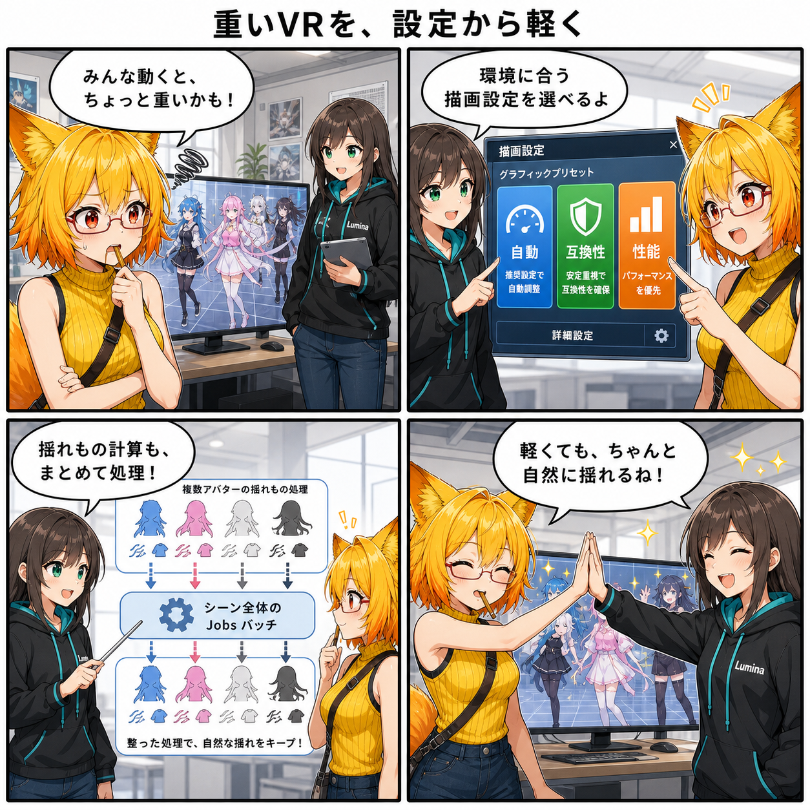

重いVRを、設定から軽く。描画と揺れものをまとめて整えた日
2026-08-04 の開発日記では、VRの描画品質を利用環境に合わせて選べる設定と、複数アバターの揺れものをシーン全体でまとめて処理する仕組みを中心に取り上げます。見た目を細かく調整したいときも、負荷を抑えたいときも、同じ設定画面から選べる土台が整いました。

集計期間には12コミットが入り、集計終了時点の最終HEADは 3934ac4（「リップシンクとURPポストエフェクトの回帰テストを追加」）でした。差分は期間直前から終了HEADまでの比較で63ファイル、5,107行追加、512行削除です。確認時点でViewer側の未コミット差分はありませんでした。
今日の主題：VRの描画負荷を、自分の環境に合わせる
今回、表示設定へグラフィックスのプリセットとカスタム設定が加わりました。HDR、MSAA、レンダースケール、影、追加ライト、Forward+、GPU Resident Drawer、GPU Occlusion、動的解像度、フォビエートレンダリングなどを、ひとつの画面から調整できる構成です。
さらにVR描画モードとして、自動・互換性・性能を選ぶ仕組みも入りました。Windows Playerでは選択に応じてDirect3D 11またはDirect3D 12を使い分け、必要な変更は次回起動へ引き継ぎます。性能側のAPIで起動が成立しなかった場合に互換側へ戻すための状態管理も実装され、単に選択肢を増やすだけでなく、起動時の安全性まで考慮されています。
複数アバターの揺れものを、ひとつの流れで処理
髪や服などの揺れを計算するNative PhysBoneは、アバターごとにばらばらに待ち合わせる構成から、シーン内の有効な処理を集めて一括でJobsへ流す構成へ進みました。依存関係を踏まえて準備し、まとめてスケジュールし、最後に結果を反映する流れです。
複数アバターを同時に表示する場面では、細かな仕事を個別に開始して待つ回数を減らせます。テストでは2体分、合計8システム・16パーティクルがひとつのシーン全体バッチでJobsを利用することを確認しています。この数値は性能倍率ではなく、テスト用の構成を正しく一括処理できたことを確かめるものです。
揺れ方そのものも自然に
同じ期間には、PhysBoneの角度制限と重力減衰も修正されました。PolarやHingeといった制限の扱い、重力方向へ徐々に落ち着く挙動、伸び縮みや移動の影響が、回帰テストと視覚回帰テストを伴って見直されています。
高速化だけを優先して揺れ方が変わってしまわないよう、処理のまとめ方と見た目の正しさを同じ日に固めた点が重要です。
表情と手首、画面効果も安定化
BlendShapeでは、分類情報をVABへ保存し、無効なデータを除外する処理が加わりました。編集時のキャッシュはすべてを作り直すのではなく、変更された部分だけを更新する方式へ進み、表情調整時の余分な処理を減らしています。
VRでは手首の追従とアバター化した手の向きを修正。リップシンクとURPポストエフェクト設定にも修正と回帰テストが入りました。カメラ列挙用バッファの再利用や、描画状態を重ねて管理するOverride Stackの追加・復元修正もあり、表示と操作の土台が広く整えられています。
4コマの裏話
今回は、プレビューの重さに困るろひへ、ルミナが「画質を一段落とす」だけでなく、環境に合う描画設定を選べるようになったことを案内します。その裏では、複数アバターの髪や服の計算も一列に集まって一括処理。最後は軽くなったVRスタジオで二人が動きを確認する流れです。
今日のまとめ
2026-08-04の記事対象期間では、VRの描画品質を設定画面から選べるようになり、起動時のグラフィックスAPI切替も安全化されました。同時に、複数アバターのNative PhysBoneをシーン全体でまとめて処理し、角度制限や重力による揺れ方もテストで守られています。
表情、手首追従、リップシンク、ポストエフェクトにも改善が入り、「軽くする」と「見た目を崩さない」を一緒に進めた一日でした。
本日のひとこと
軽さは、削るだけじゃなく、選べて、まとめられることから。